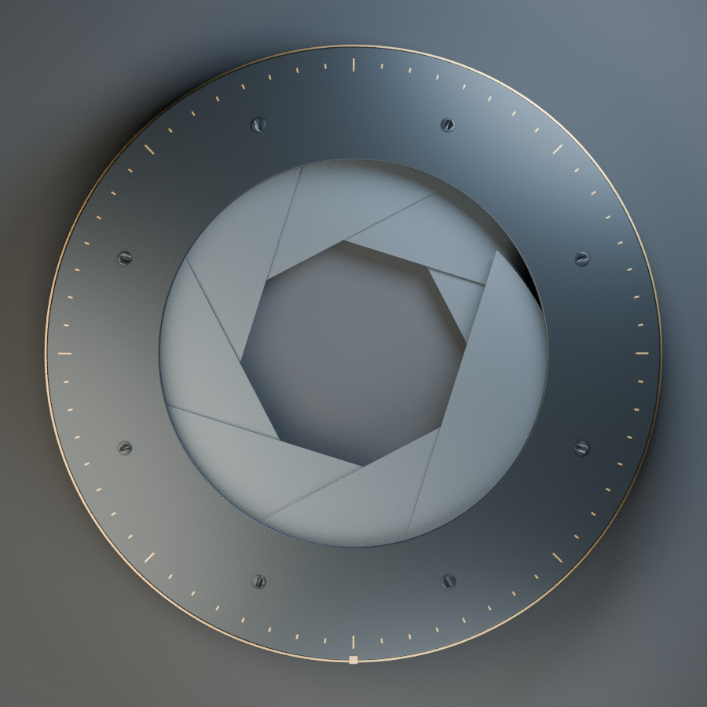
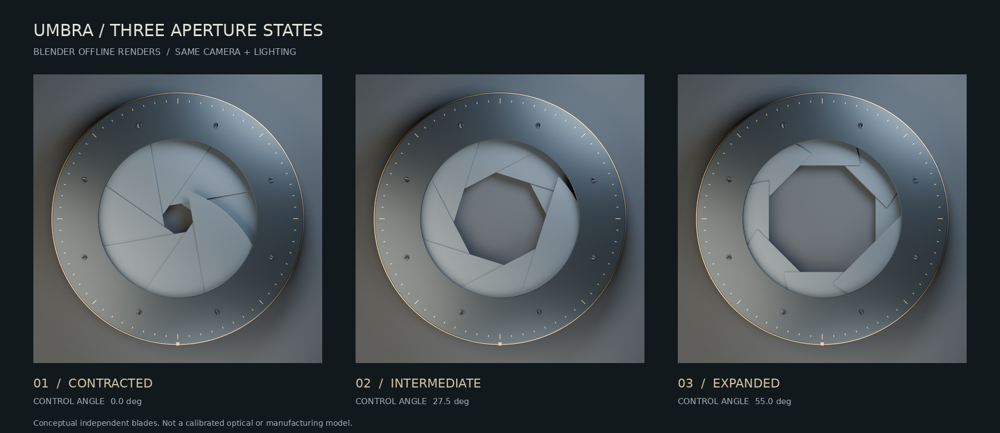
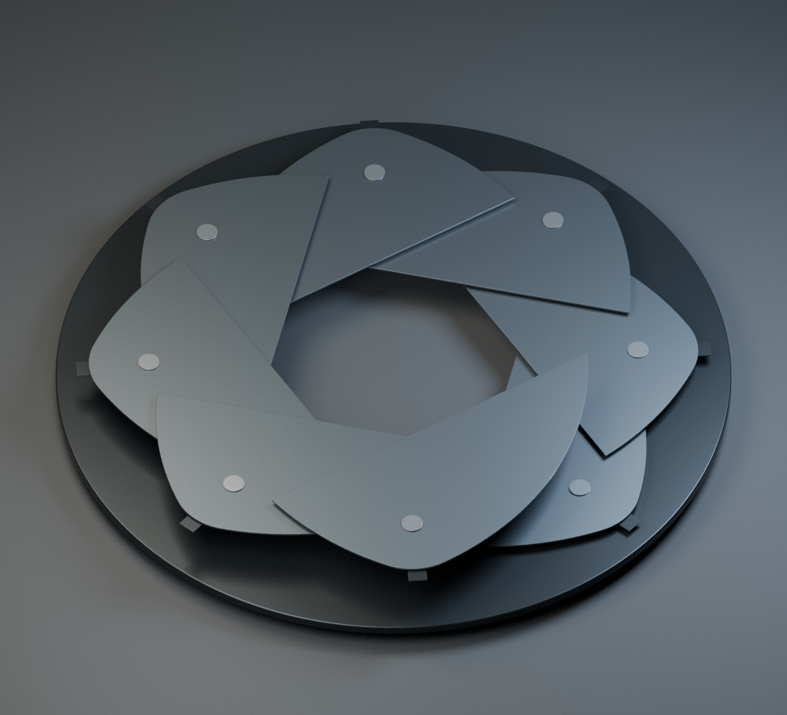
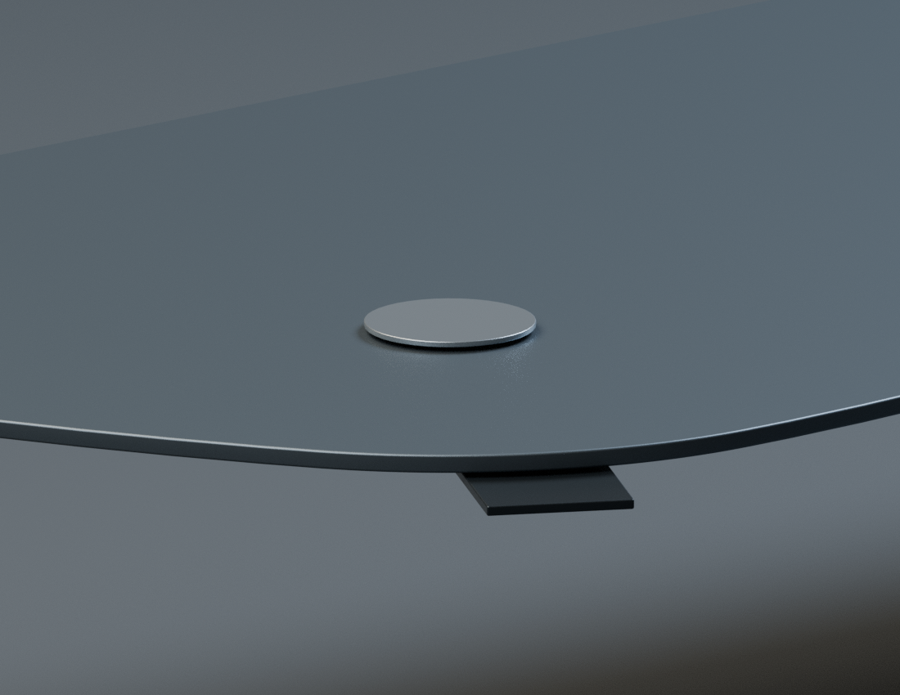

把遮挡与碰撞分开
叶片在俯视投影中交叠是光阑形态的一部分；实体以不同轴向高度分层。重复面、共面重叠与状态采样碰撞，分别检查，不用一张主图代替几何证据。
AN EXERCISE IN LIGHT & CLEARANCE
让光穿过，让结构留下。
八叶概念光阑 · 石墨与金属 · 独立旋转叶片

02 / MOTION ATLAS

图版用于检查叶片遮挡、孔口轮廓和层次；离线图不能证明实时画面无深度闪烁。
03 / NOTES ON MAKING
叶片在俯视投影中交叠是光阑形态的一部分；实体以不同轴向高度分层。重复面、共面重叠与状态采样碰撞，分别检查，不用一张主图代替几何证据。
对照 Knight Optical GIQ2840 ↗ 的真实光阑。我们的叶片数量、尺寸与厚度是视觉练习参数；不复制其结构，也不声称性能等同。
运动采样只覆盖记录的角度，不是连续运动证明。当前制作环境未能验证 WebGL 实时闪烁、手机性能或真实光学效果；这些仍是明确的待验项。
隐藏外壳后的 Blender 实际渲染，用于观察分层叶片与支承关系。不是爆炸动画，也不是实时剖切。


04 / OPEN THE OBJECT
原始建模文件、交换模型与可复现脚本。